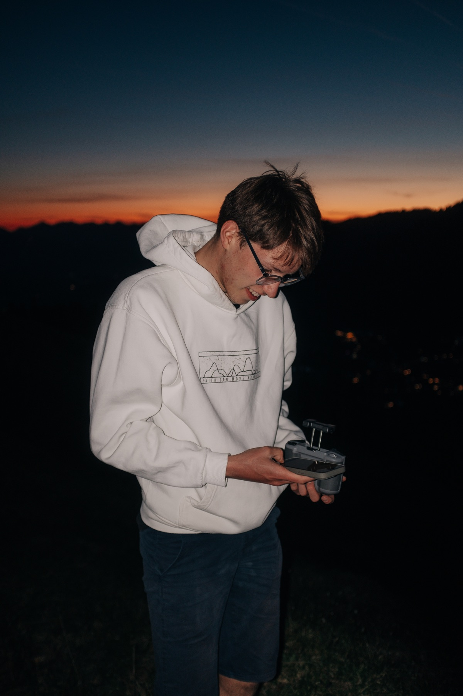
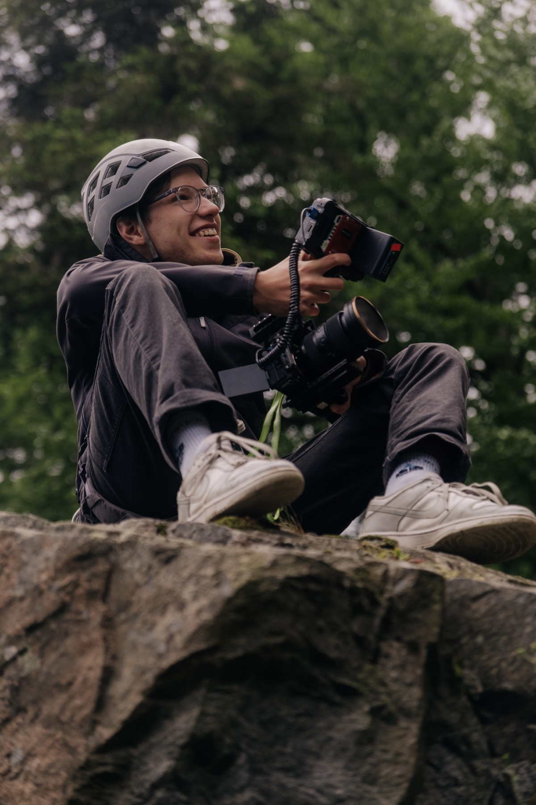
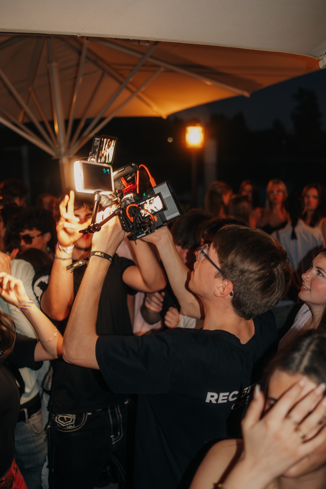
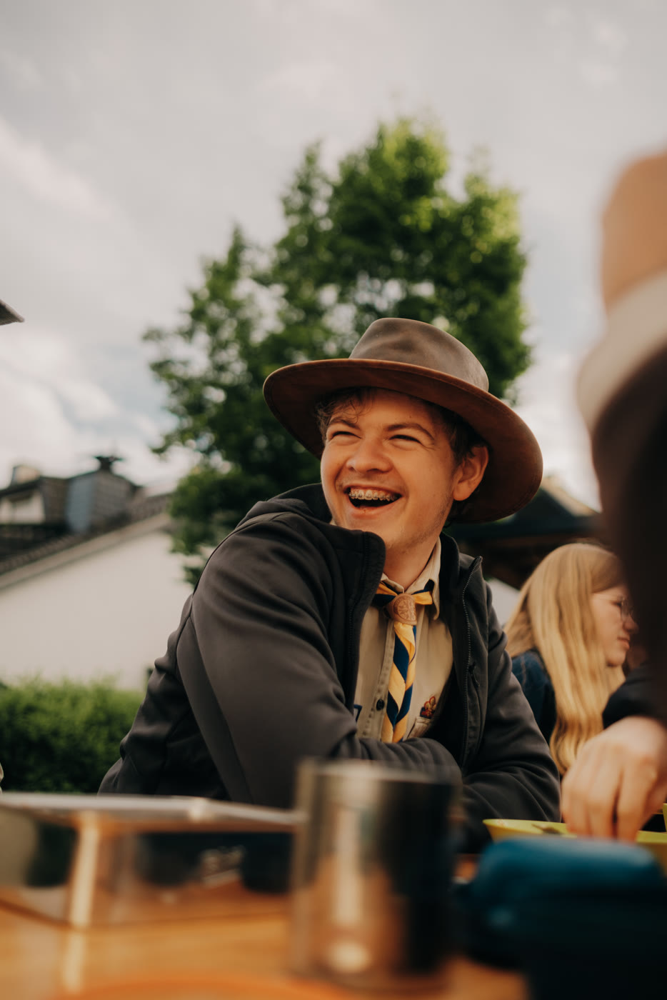
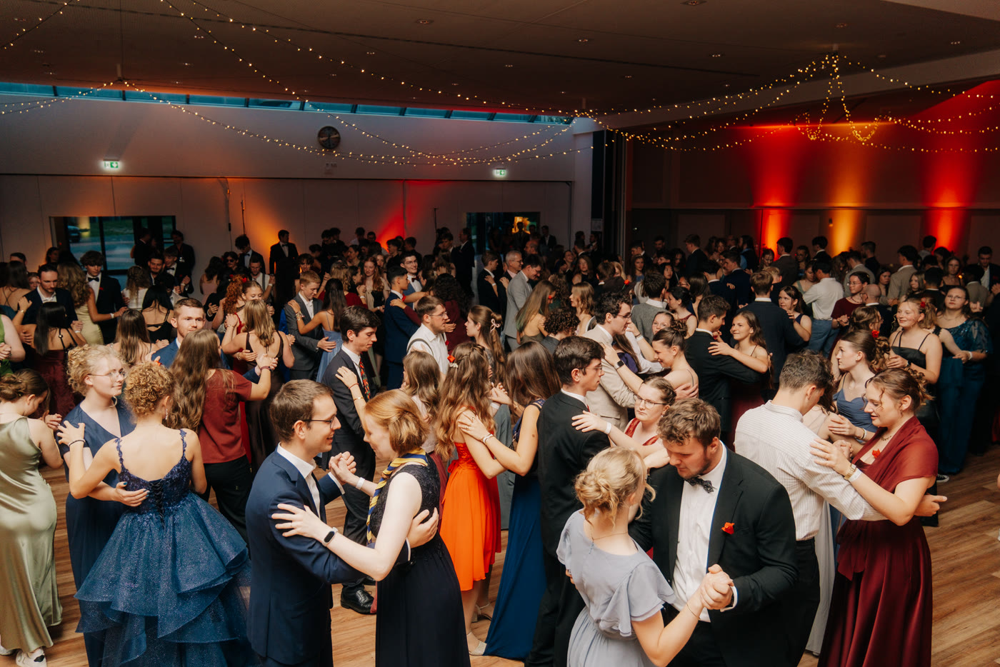
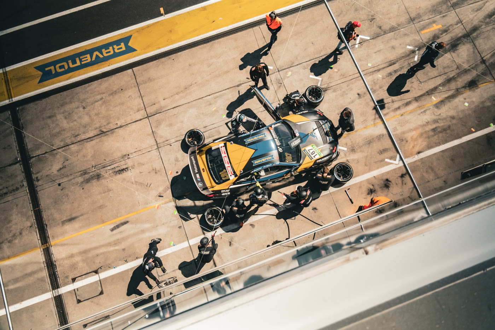
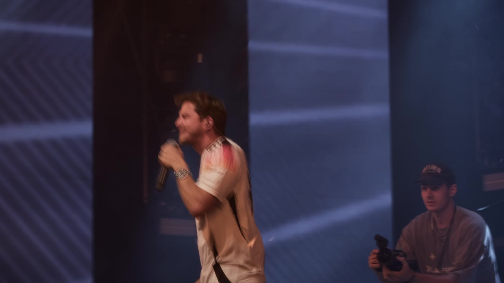

FOTOGRAFIE & FILM
Jonas
Heilmann.
Mitten im Moment.
Hinter der Kamera.
Fotograf und Filmemacher aus Wiesbaden.
Für Menschen, Unternehmen und ihre Ideen.



FOTO · FILM · WEB & SOFTWARE
Ein Bild.
Ganz da.
Fotografie für Menschen, Unternehmen und Veranstaltungen, in Wiesbaden und darüber hinaus. Mich interessieren die Momente dazwischen genauso wie das geplante Motiv.
Projekt anfragen


Mehr Fotoarbeiten und Einblicke hinter die Kamera auf Instagram ↗.
Dann wird
es Film.
Musikvideos. Aftermovies. Social Content.
Mein Showreel: ein Blick auf die Bilder und Geschichten, die ich in Bewegung bringe.

Gute Ideen
dürfen weiter.
Manchmal braucht es zu den Bildern eine Website. Oder eine Anwendung, die eine konkrete Aufgabe löst. Auch daran arbeite ich.
WebdesignWebsites für Unternehmen
Ein Auftritt für lokale Unternehmen, von den Inhalten bis zur Umsetzung. Für ein Firmenprojekt habe ich mit einem technischen Partner eine neue Website entwickelt.
SoftwareBuchung & Verwaltung
Ein Buchungssystem mit unterschiedlichen Rollen und einer angepassten Verwaltung. Entwickelt mit Django, PostgreSQL und Python.
Was hast
du vor?
Erzähl mir von deiner Idee.
Ein paar Sätze reichen für den Anfang.